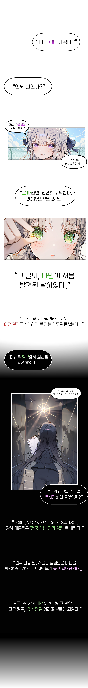
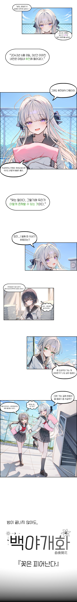

SCROLL TO EXPLORE01 / 07
ILLUSTRATION AREA ✳
01 — THE WORLD
끝나지 않은 밤,
다시 피어나는 세계.
WORLD OF
BAEKYA GAEHWA ✳
마법이 발견된 후, 세상은 달라졌다.
국가의 마법 통제에 맞선 시민들의 저항은 3년 전쟁으로 이어졌습니다. 휴전 이후의 서울에서는 국가와 시민 자치 조직이 한강을 경계로 나뉜 채 재건을 이어갑니다.
한강의 경계는 무력 충돌을 막기 위한 임시 군사적 경계선입니다.
이 세계의 시간 따라가기 →FACTIONS & PLACES
이 세계의 사람들
01 — 0302 — CHRONICLE
시간의 기록
마법의 발견부터 휴전까지.
세계가 걸어온 시간을 따라가 보세요.
03 — CHARACTERS
저마다의 이야기를
품은 사람들.
서로 다른 자리에서 살아가는
인물들을 만나보세요.
05 — PROLOGUE
순간을 담다
백야개화의 시작을 담은
프롤로그 웹툰입니다.
PROLOGUE / 白夜開花밤이 끝나지 않아도,
꽃은 피어난다.프롤로그 웹툰 보기


06 — LATEST NEWS
새로운 소식
등록된 업데이트가 없습니다. ✳